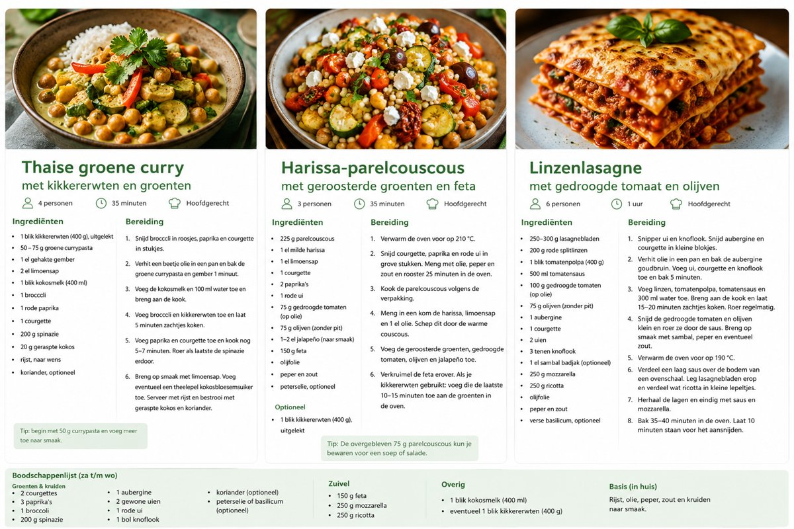

Linzenlasagne met gedroogde tomaat en olijven
Ingrediënten
- 250-300 g lasagnebladen
- 200 g rode splitlinzen
- 1 blik tomatenpolpa (circa 400 g)
- 500 ml tomatensaus
- 100 g gedroogde tomaten
- 75 g olijven zonder pit
- 1 aubergine
- 1 courgette
- 2 uien
- 3 tenen knoflook
- 250 g mozzarella
- 250 g ricotta
- 1 el sambal badjak, optioneel
- olijfolie, peper en zout
Bereiding
- Snipper de uien en knoflook. Snijd aubergine en courgette in kleine blokjes.
- Bak de aubergine in olie. Voeg ui, courgette en knoflook toe en bak nog ongeveer 5 minuten.
- Voeg linzen, tomatenpolpa, tomatensaus en ongeveer 300 ml water toe. Laat 15-20 minuten zacht koken.
- Roer gedroogde tomaten en olijven door de saus en breng op smaak.
- Verwarm de oven voor op 190 °C.
- Bouw lagen van saus, lasagnebladen en ricotta. Eindig met saus en mozzarella.
- Bak 35-40 minuten en laat voor het aansnijden 10 minuten staan.